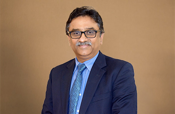

Dr. A. V. Gurava Reddy
QUALIFICATIONS
MBBS, D (Ortho), DNB (Ortho), FRCS (Edinburgh), FRCS (Glasgow), FRCS (London), M Ch (Ortho – Liverpool),Chairman & Chief Joint Replacement Surgeon, Managing Director, Sunshine Hospitals
ABOUT DOCTOR
Dr. A.V. Gurava Reddy is the Founder, Chairman and Managing Director of Sunshine Group of Hospitals. He is widely regarded as a visionary in the field of orthopaedics and is well-known for embracing the human side of health care. Dr. A.V. Gurava Reddy performs close to 2000 joint replacements (Hip, Knee and Shoulder both Primary and Revision) in a year, which is the second highest in entire South Asia. He is one of the best joint replacement surgeons in India – well supported by an experienced team of 100+doctors and paramedical staff.
Dr. Reddy has extensive international experience as he has worked for more than ten years in the UK. He frequently tours Middle East, Europe and USA as a visiting consultant for performing joint replacement surgeries. He is a very popular joint replacement surgeon and medical expert in Middle East, Europe and USA.
His exemplary career spanning more than two decades has ensured happy and trouble-free lives for thousands of patients. Prior to setting up Sunshine Hospitals, he has been in senior leadership positions in company of great peers and great mentors including Dr. Sancheti, Dr. Campbell, Dr. Monk, Dr. Hardinge, Prof. Klenerman and others at reputed national and international health care institutions.
SPECIALIZATION :
Assisted Reproductive Technology,
Obstetrics and Gynecology,
Abdominal and Vaginal Hysterectomy,
Myomectomy,
Repair of genital fistulae.
Pioneering Efforts
Performed Joint Replacement surgeries on patients from Tanzania, Nigeria, Middle East and South Africa.
Performed the highest number of Buechel – Pappas mobile bearing total knee arthroplasty in the whole of India.
Performed the highest number of bilateral simultaneous total knee arthroplasties in A.P.
First orthopaedic surgeon in Telangana & Andhra Pradesh to use computer navigation system for total knee arthroplasty.
First in Telangana & Andhra Pradesh to launch Oxinium Smith and Nephew total knee prosthesis.
First doctor in Telangana & Andhra Pradesh to perform all four joint replacements on a single patient.
First in Telangana & Andhra Pradesh to launch CR-150 Hiflex cruciate retaining total knee arthroplasty.
Awards
The International Association of Orthopaedic Surgeons has recognized Dr. Gurava Reddy as a leading physician of the world and the “Top Adult Reconstructive Orthopaedic Surgeon in India”. This is a rare international honour in recognition of the medical capabilities of Dr. A.V. Gurava Reddy.
Dr. Reddy has been an active faculty member at the Royal College of Surgeons, Edinburgh, UK and has participated in various national and international conferences. He is the founder member of “Indian Society of Hip & Knee Surgeons”. Owing to his outstanding services in the field of Orthopaedics, he was felicitated by the former Chief Minister of Andhra Pradesh Shri. K Rosiayyah in the year 2010.
Op Timmings:
Thursday:- 9:00 Am - 10:45 Am (visit special cases)